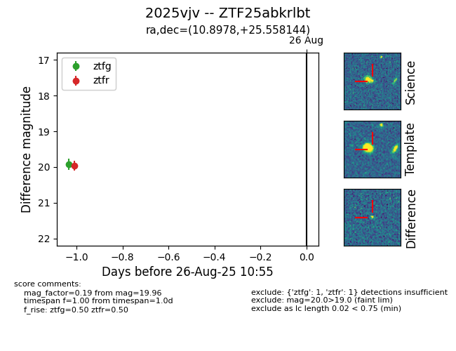

Target 2025vjv at 2025-08-26 11:00, see:
FINK: fink-portal.org/ZTF25abkrlbt
Lasair: lasair-ztf.lsst.ac.uk/objects/ZTF25abkrlbt
ALeRCE: alerce.online/object/ZTF25abkrlbt
TNS: wis-tns.org/object/2025vjv
YSE: ziggy.ucolick.org/yse/transient_detail/2025vjv
alt names
ZTF25abkrlbt (ztf,fink)
2025vjv (tns,yse)
coordinates:
equatorial (ra, dec) = (10.8978,+25.55814)
galactic (l, b) = (120.7076,-37.27971)
photometry
last ztfg=19.92, ztfr=19.96
1 ztfg, 1 ztfr detections
